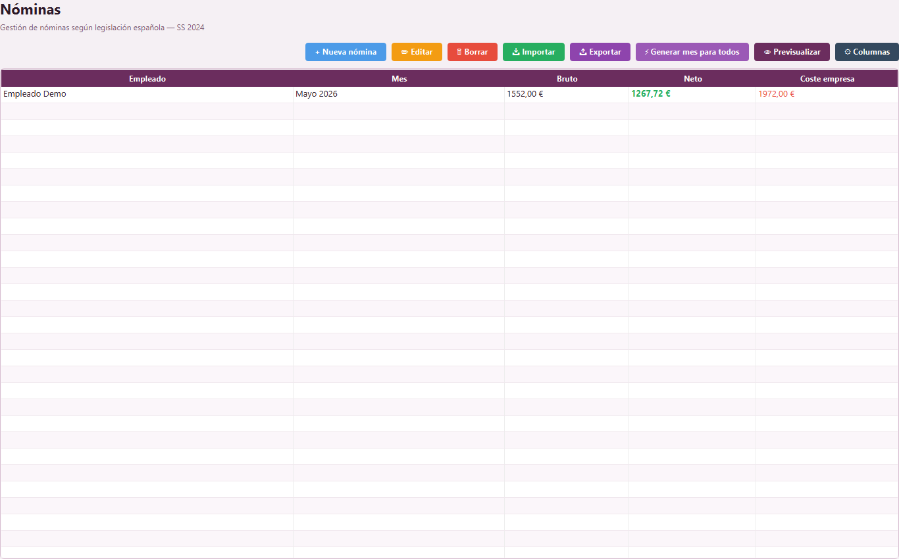
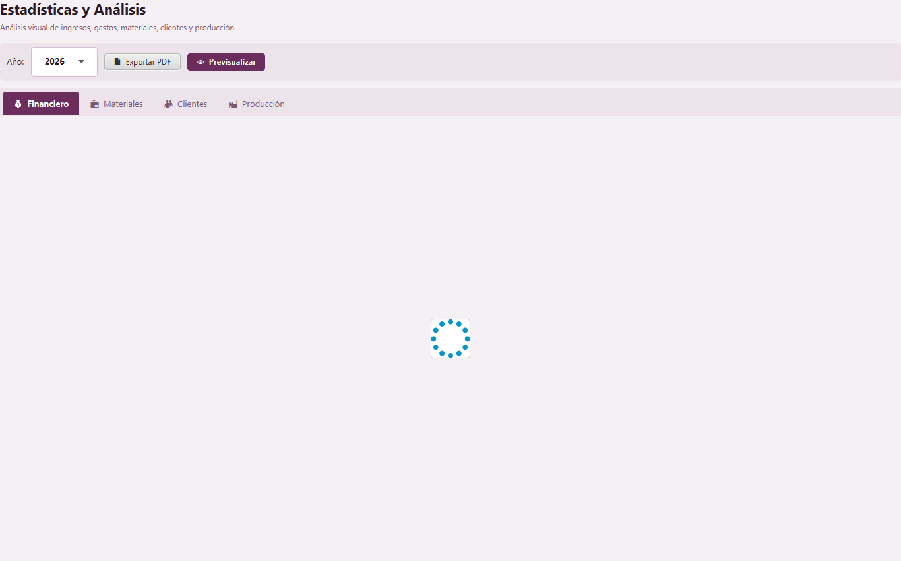
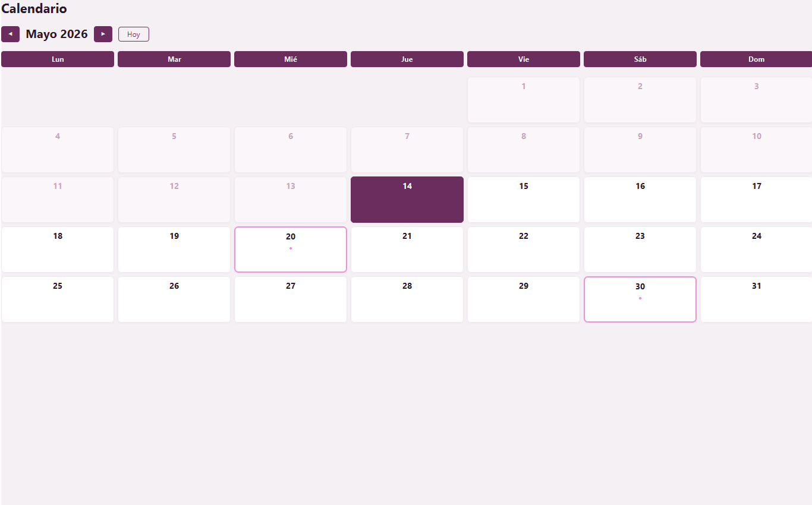
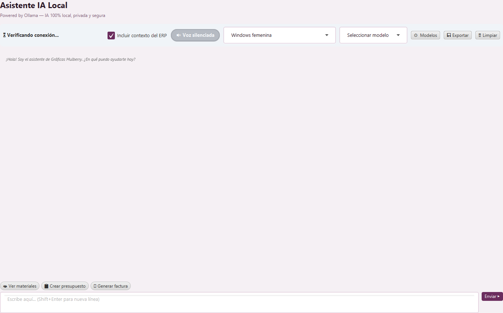
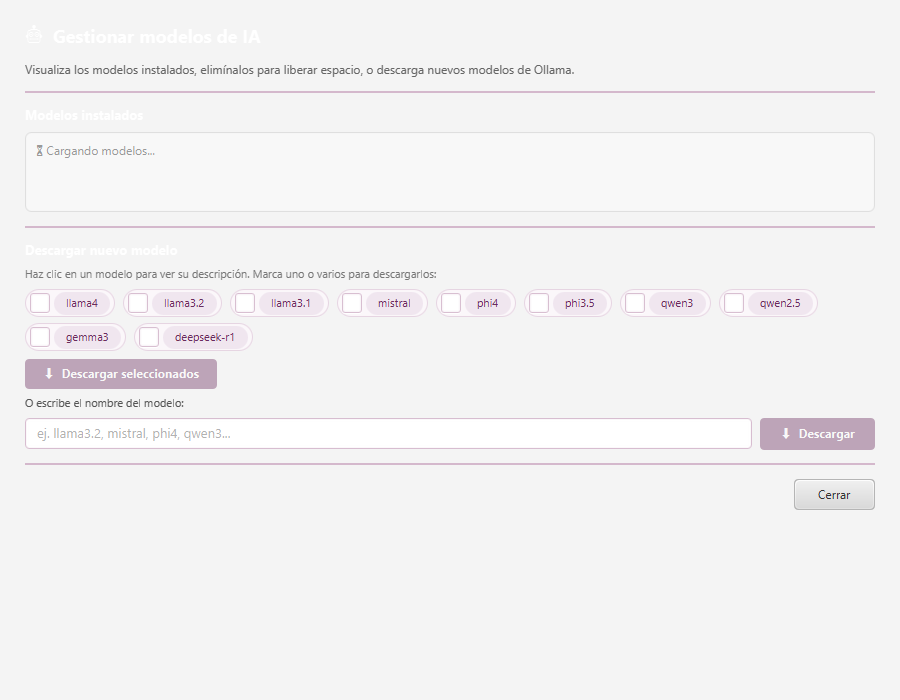
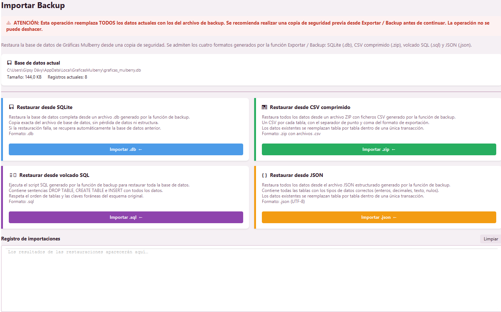
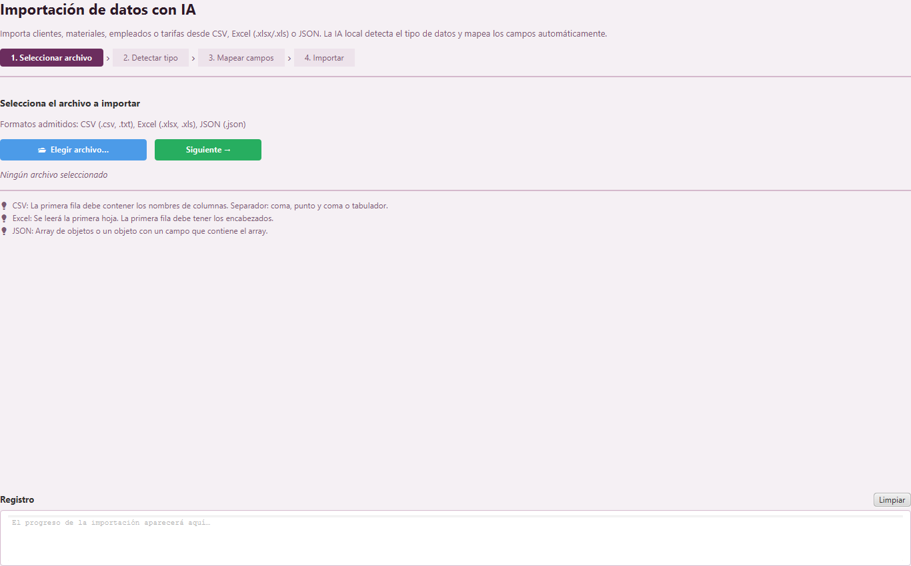

Manual completo de usuario
Guía paso a paso de Gráficas Mulberry v10.5, organizada por pantalla y módulo. Cada apartado explica cómo acceder, qué contiene, cómo crear, editar, borrar, previsualizar, imprimir, importar y exportar cuando la función existe en esa pantalla.
VERSIÓN 10.51Objetivo y forma correcta de usar este manual
Este manual está escrito para el usuario final. La estructura sigue el recorrido real dentro de la aplicación: primero se explica cómo entrar y moverse; después se documenta cada módulo en su propio apartado; por último se explican herramientas transversales como IA, copias, importaciones, columnas dinámicas y vista previa PDF.
Cuando una acción se repite en varios módulos, se vuelve a explicar dentro del módulo correspondiente. Esto evita que el usuario tenga que saltar a otra parte del manual para saber cómo crear, editar, borrar, imprimir, importar o exportar desde la pantalla en la que está trabajando.
La información de trabajo se guarda en una base de datos SQLite local en %LOCALAPPDATA%\GraficasMulberry\graficas_mulberry.db. Para protegerla, usa Exportar / Backup de forma periódica.
2Arranque, navegación y acceso a pantallas
Abrir la aplicación
- Abre Gráficas Mulberry desde el acceso directo de Windows o desde el menú Inicio.
- Espera a que aparezca el panel principal. La aplicación entra directamente al entorno de trabajo.
- Comprueba la versión visible en la interfaz: v10.5.0.
- Antes de trabajar por primera vez, entra en Configuración y revisa datos de empresa, preferencias y copias.
Acceder a un módulo
- Localiza el menú lateral.
- Elige el grupo correspondiente: Clientes, Comercial, Almacén, Personal, Analítica o Sistema.
- Haz clic en el módulo deseado.
- Comprueba el título superior de la pantalla cargada.
- Trabaja en el área central o abre el módulo en ventana aparte si necesitas compararlo con otra pantalla.
Abrir un módulo en ventana aparte
- Abre el menú contextual del botón del módulo.
- Selecciona Abrir en ventana aparte.
- La pantalla se abre en una ventana independiente.
- Usa esta opción para consultar datos sin abandonar la pantalla central.
- Si quieres volver al área principal, usa Abrir en área principal.
| Área principal | Zona central donde se carga el módulo seleccionado. |
| Ventana aparte | Ventana independiente para comparar o consultar otro módulo. |
| Salir | Cierra la aplicación y libera servicios auxiliares. |
3Acciones comunes en tablas, formularios y documentos
Seleccionar y leer una tabla
- Abre el módulo que contiene la tabla.
- Lee los encabezados de columnas para saber qué dato representa cada una.
- Usa Buscar para filtrar por texto visible.
- Haz clic sobre una fila para seleccionarla.
- Antes de pulsar Editar, Borrar, PDF o Exportar, confirma que la fila seleccionada es la correcta.
- Si no ves una columna, pulsa Columnas y comprueba si está oculta.
Crear registros
- Pulsa Nuevo o Nueva.
- Rellena los campos obligatorios.
- Completa los campos recomendados para evitar documentos incompletos.
- Revisa fechas, importes, estado, cliente, empleado o material según el módulo.
- Pulsa Guardar.
- Comprueba que el registro aparece en la tabla.
Editar registros
- Busca el registro.
- Selecciona la fila.
- Pulsa Editar.
- Modifica los campos necesarios.
- Guarda.
- Verifica el resultado en la tabla.
Borrar o anular
Cuando una pantalla no tiene botón específico de anulación, usa el estado del documento o una observación para dejar constancia. Borra solo registros erróneos, duplicados o de prueba.
- Selecciona el registro.
- Comprueba si está relacionado con documentos históricos.
- Si conviene conservar trazabilidad, cambia estado o añade nota de anulación.
- Si debe eliminarse, pulsa Borrar o Eliminar.
- Lee la confirmación.
- Confirma únicamente si estás seguro.
Previsualizar, imprimir y generar PDF
- Selecciona el documento o informe.
- Pulsa PDF, Vista previa, Previsualizar o Exportar PDF.
- En la vista previa, usa Anterior, Siguiente, Zoom + y Zoom -.
- Revisa empresa, cliente, fecha, número, líneas, impuestos y totales.
- Si hay errores, vuelve al módulo, edita y genera de nuevo.
- Cuando esté correcto, pulsa Imprimir.
Importar y exportar
- Para importar, entra en el módulo destino y pulsa Importar.
- Selecciona formato y archivo.
- Revisa mensajes y resumen.
- Comprueba la tabla tras importar.
- Para exportar, pulsa Exportar.
- Elige formato y destino si se solicita.
- Comprueba el archivo generado o el registro de exportación.
4Panel principal
El panel principal es la pantalla de inicio operativo. Resume actividad, muestra recordatorios próximos y sirve como punto de orientación al abrir la aplicación.

Acceder
- Pulsa Panel principal en el menú lateral.
- Revisa tarjetas de resumen y recordatorios.
- Si no aparecen recordatorios, revisa Calendario y preferencias de recordatorios en Configuración.
Qué revisar
| Resumen de actividad | Indicadores generales del estado de la aplicación y del trabajo registrado. |
| Próximos recordatorios | Eventos o notas del calendario en el período configurado. |
| Sin recordatorios | Indica que no hay avisos próximos o que el rango configurado no los incluye. |
5Clientes
Clientes centraliza personas y empresas usadas en presupuestos, pedidos, albaranes y facturas.

Acceder
- En el menú lateral, abre el grupo Clientes.
- Pulsa Clientes.
- La tabla muestra los clientes registrados.
Tabla de clientes
| Nombre y apellidos | Identificación principal del cliente. |
| Tipo | Persona, empresa u otra clasificación disponible. |
| NIF/CIF | Dato fiscal usado en documentos. |
| Teléfono / Email | Contacto operativo. |
| Ciudad, dirección y C.P. | Datos fiscales, de entrega o contacto. |
| Notas | Observaciones internas. |
| Creado | Fecha de alta. |
| Columnas dinámicas | Campos propios añadidos por el usuario o importados desde archivos. |
Crear un cliente
- Pulsa Nuevo.
- Rellena nombre o razón social.
- Completa apellidos si procede.
- Selecciona tipo de cliente.
- Introduce NIF/CIF, teléfono, email, dirección, C.P. y ciudad.
- Añade notas internas si necesitas recordar condiciones o preferencias.
- Pulsa Guardar.
- Comprueba que aparece en la tabla.
Editar un cliente
- Busca el cliente.
- Selecciona su fila.
- Pulsa Editar.
- Actualiza los campos necesarios.
- Guarda.
- Revisa que los cambios aparecen en la tabla.
Borrar o conservar historial
- Selecciona el cliente.
- Antes de borrar, comprueba si tiene documentos históricos.
- Si tiene facturas, presupuestos o pedidos, conserva el registro y usa notas para indicar baja o no usar.
- Si es un duplicado o error, pulsa Borrar.
- Confirma solo si no afecta al historial.
Importar clientes
- Pulsa Importar.
- Selecciona el formato indicado por la aplicación.
- Elige el archivo.
- Si el archivo contiene columnas nuevas, la aplicación puede crearlas.
- Revisa el resumen de importación.
- Comprueba la tabla y configura columnas si es necesario.
Exportar clientes
- Pulsa Exportar.
- Selecciona formato.
- Guarda el archivo.
- Abre el archivo exportado para comprobar que contiene los datos esperados.
Personalizar columnas en Clientes
- Pulsa Columnas.
- Usa Añadir para crear campos propios.
- Usa Renombrar para cambiar etiquetas.
- Usa Ocultar o Mostrar para controlar la tabla.
- Vuelve a la tabla y rellena valores si la columna es editable.
6Presupuestos
Presupuestos permite crear ofertas detalladas para clientes, con datos generales, servicios/técnicas, materiales de stock, totales y documento PDF.

Acceder
- Abre el grupo Comercial.
- Pulsa Presupuestos.
- Revisa la tabla de presupuestos registrados.
Pestañas y tablas
| Datos generales | Cliente, número, fecha, estado, condiciones y observaciones. |
| Servicios / Técnicas | Líneas de trabajo con descripción, técnica, cantidad, precio unitario, descuento y total. |
| Materiales del stock | Selector de material, disponibilidad, precio, cantidad, botón Añadir al presupuesto y total de materiales. |
Crear un presupuesto
- Pulsa Nuevo.
- En Datos generales, selecciona cliente.
- Revisa fecha, número y estado.
- Añade condiciones u observaciones.
- En Servicios / Técnicas, introduce cada trabajo: descripción, técnica, cantidad, precio y descuento.
- En Materiales del stock, selecciona material, revisa disponibilidad, indica cantidad y pulsa Añadir al presupuesto.
- Comprueba total de servicios, materiales, impuestos y total final.
- Guarda.
Editar un presupuesto
- Busca el presupuesto.
- Selecciona la fila.
- Pulsa Editar.
- Modifica datos generales, líneas o materiales.
- Revisa totales después de cualquier cambio.
- Guarda.
- Vuelve a generar PDF si ya habías entregado una versión anterior.
Anular o borrar un presupuesto
- Selecciona el presupuesto.
- Si se envió al cliente, cambia estado o añade observación de anulación en lugar de borrarlo.
- Si es prueba o duplicado, usa Borrar.
- Confirma la eliminación solo si no necesitas historial.
Previsualizar, imprimir o entregar
- Selecciona el presupuesto.
- Pulsa PDF o Vista previa.
- Revisa cliente, fecha, líneas, materiales, IVA y total.
- Usa zoom si necesitas ver detalle.
- Imprime o guarda el documento desde la vista previa.
Importar y exportar presupuestos
- Para importar, pulsa Importar, selecciona archivo y confirma. Los presupuestos importados se añaden o actualizan.
- Para exportar, pulsa Exportar, elige formato y guarda.
- Revisa siempre el resultado en la tabla.
7Facturas
Facturas genera documentos de venta con datos de cliente, líneas de servicios, materiales de stock, impuestos, totales y PDF imprimible.

Acceder
- En Comercial, pulsa Facturas.
- Revisa el listado.
- Usa Buscar para localizar facturas por cliente, número o dato visible.
Pestañas
| Datos generales | Número, serie, cliente, fecha, vencimiento, estado de cobro y observaciones. |
| Servicios / Técnicas | Trabajos facturados con cantidad, precio, descuento e impuestos. |
| Materiales del stock | Materiales añadidos a la factura y total de materiales. |
Crear factura
- Pulsa Nueva factura o Nuevo.
- Selecciona cliente.
- Revisa número, serie y fecha.
- Añade servicios en Servicios / Técnicas.
- Si corresponde, añade materiales desde Materiales del stock con Añadir a la factura.
- Comprueba base imponible, descuentos, impuestos y total.
- Guarda.
Editar factura
- Selecciona la factura.
- Pulsa Editar factura o Editar.
- Modifica cabecera, servicios o materiales.
- Revisa total e impuestos.
- Guarda.
- Genera de nuevo el PDF si el documento ya estaba emitido.
Anular o borrar factura
Las facturas deben conservar trazabilidad. Si la factura tiene validez fiscal o ya se entregó, no la borres sin criterio administrativo. Usa observaciones, estado o corrección documental según proceda.
- Selecciona la factura.
- Revisa si fue entregada o cobrada.
- Si debe conservarse, cambia estado o añade observación de anulación.
- Si es prueba, pulsa Borrar y confirma.
Previsualizar e imprimir factura
- Selecciona factura.
- Pulsa PDF o Vista previa.
- Comprueba datos de empresa, cliente, NIF/CIF, número, fecha, líneas, IVA y total.
- Pulsa Imprimir si todo es correcto.
Importar y exportar facturas
- Pulsa Importar para añadir o actualizar facturas desde archivo.
- Revisa el resumen y la tabla.
- Pulsa Exportar para guardar facturas en formato disponible.
8Albaranes
Albaranes documenta entregas de trabajos, artículos o materiales al cliente.

Acceder
- En Comercial, pulsa Albaranes.
- Consulta la tabla.
- Selecciona una fila para editar, borrar, exportar o generar documento.
Crear albarán
- Pulsa Nuevo.
- En Datos generales, selecciona cliente, fecha, número, dirección y observaciones.
- En Artículos, añade líneas entregadas con descripción y cantidad.
- Si usas materiales, revisa disponibilidad.
- Guarda.
Editar, anular o borrar
- Selecciona el albarán.
- Pulsa Editar para modificar cabecera o artículos.
- Si la entrega se cancela, deja observación o estado si existe.
- Borra solo albaranes de prueba o erróneos.
Imprimir o exportar
- Selecciona el albarán.
- Pulsa PDF o vista previa.
- Revisa cliente, artículos y cantidades.
- Imprime o guarda.
- Para listado externo, pulsa Exportar.
Importar
- Pulsa Importar.
- Selecciona archivo.
- Confirma. Los albaranes importados se añaden o actualizan.
- Revisa el resultado en la tabla.
9Pedidos y control de pagos
Pedidos permite controlar trabajos aceptados, estados, importes, entregas y pagos vinculados.

Acceder
- En Comercial, pulsa Pedidos.
- Usa la pestaña Pedidos para gestionar trabajos.
- Usa Control de pagos para cobros y vencimientos.
Crear pedido
- Pulsa Nuevo.
- Selecciona cliente.
- Rellena número, fecha, entrega, descripción, estado, total y observaciones.
- Guarda.
- Comprueba que aparece en la tabla.
Editar pedido
- Busca y selecciona el pedido.
- Pulsa Editar.
- Actualiza estado, fecha de entrega, total u observaciones.
- Guarda.
Anular o borrar pedido
- Selecciona el pedido.
- Si se canceló, cambia estado o añade observación.
- Si nunca fue real, usa Borrar.
- Antes de borrar, comprueba si tiene pagos asociados.
Añadir pago
- Selecciona el pedido.
- Abre la pestaña Control de pagos.
- Pulsa Añadir pago.
- Introduce importe, fecha, método y observaciones.
- Guarda.
- Comprueba pagado y pendiente.
Fraccionar y confirmar cobro
- Usa Fraccionar pago si el cliente pagará en varios vencimientos.
- Cuando recibas dinero, selecciona el pago.
- Pulsa Confirmar cobro.
- Indica la fecha en que se recibió.
- Revisa que el pago pasa a cobrado.
Importar y exportar pedidos
- Pulsa Importar para cargar pedidos desde archivo.
- Pulsa Exportar para sacar listados.
- Revisa pagos y estados tras cualquier importación.
10Tarifas
Tarifas guarda precios por técnica de impresión, servicio, categoría o unidad de trabajo.

Acceder
- Abre Almacén.
- Pulsa Tarifas.
- Revisa precios por técnica.
Crear tarifa
- Pulsa Nuevo.
- Introduce técnica o servicio.
- Añade descripción, precio, unidad, categoría y observaciones.
- Guarda.
Editar, borrar, importar y exportar
- Para editar, selecciona tarifa y pulsa Editar.
- Actualiza precio o descripción y guarda.
- Para borrar, selecciona y confirma solo si ya no se usa.
- Para importar, pulsa Importar y selecciona archivo.
- Para exportar, pulsa Exportar y guarda listado.
11Materiales
Materiales controla stock, proveedores, pagos de compra y reglas de consumo por técnica.

Acceder
- Abre Almacén.
- Pulsa Materiales.
- Elige Stock, Pagos o Consumo por técnica.
Gestionar stock
- En la pestaña Stock, pulsa Nuevo para crear material.
- Rellena nombre, referencia, proveedor, unidad, precio, stock actual y stock mínimo.
- Guarda.
- Activa Solo materiales con stock bajo para revisar compras necesarias.
Editar o borrar material
- Selecciona material.
- Pulsa Editar para corregir stock, proveedor, precio o mínimo.
- Guarda.
- Borra solo si no forma parte del historial de facturas o consumos.
Registrar pagos de materiales
- Abre la pestaña Pagos.
- Añade un pago.
- Indica proveedor, importe, fecha y notas.
- Guarda.
- Revisa la tabla de pagos.
Configurar consumo por técnica
- Abre Consumo por técnica.
- Selecciona técnica y material.
- Define cuánto se consume por unidad.
- Guarda la regla.
- Comprueba estas reglas antes de facturar, porque pueden afectar al stock.
Importar y exportar materiales
- Pulsa Importar para cargar inventario.
- Revisa columnas y stock.
- Pulsa Exportar para guardar listado.
12Empleados
Empleados almacena datos del personal y sirve de base para nóminas.

Acceder
- Abre Personal.
- Pulsa Empleados.
- Usa Buscar o el filtro de empleados dados de baja.
Crear empleado
- Pulsa Nuevo.
- Rellena nombre, apellidos, documento, teléfono, email, puesto, salario, fecha de alta y observaciones.
- Marca Activo si corresponde.
- Guarda.
Editar o dar de baja
- Selecciona empleado.
- Pulsa Editar.
- Actualiza datos laborales o contacto.
- Para baja, desmarca Activo o registra observación.
- Activa Mostrar empleados dados de baja para verlos de nuevo.
Borrar, importar y exportar
- Borra solo empleados creados por error.
- Importa empleados desde archivo si tienes listado externo.
- Exporta para revisión o copia administrativa.
13Nóminas
Nóminas permite registrar y calcular documentos laborales según parámetros salariales.

Acceder
- Abre Personal.
- Pulsa Nóminas.
- Filtra por año y mes si necesitas un período concreto.
Crear nómina
- Comprueba antes que el empleado existe en Empleados.
- Pulsa Nueva.
- Selecciona año, mes y empleado.
- Introduce salario base, precio/hora, horas extra normales, horas extra festivas, complementos, no salarial e IRPF.
- Revisa cálculos.
- Guarda.
Editar, borrar e imprimir
- Selecciona nómina.
- Pulsa Editar para corregir importes o período.
- Borra solo nóminas erróneas o duplicadas.
- Pulsa PDF o vista previa para generar documento.
- Revisa antes de imprimir.
Importar y exportar
- Usa Importar para cargar nóminas desde formato admitido.
- Usa Exportar para guardar listados o documentación.
14Estadísticas y análisis
Estadísticas muestra análisis visual de ingresos, gastos, materiales, clientes y producción.

Acceder y consultar
- Abre Analítica.
- Pulsa Estadísticas.
- Selecciona el año.
- Revisa tarjetas, gráficos y datos agregados.
Previsualizar y exportar PDF
- Pulsa Previsualizar para revisar el informe.
- Comprueba que el año y datos son correctos.
- Pulsa Exportar PDF para guardar informe.
- Abre el PDF generado si necesitas verificarlo.
15Calendario
Calendario permite organizar notas y recordatorios.

Acceder y moverse
- Abre Analítica.
- Pulsa Calendario.
- Usa las flechas para cambiar de mes.
- Pulsa Hoy para volver a la fecha actual.
Crear y borrar notas
- Selecciona un día.
- Escribe la nota o recordatorio.
- Guarda.
- Revisa la zona Notas guardadas.
- Para eliminar, usa el botón de cierre o eliminación de la nota.
Ver recordatorios en el panel
- Configura antelación de recordatorios en Configuración.
- Vuelve al Panel principal.
- Comprueba Próximos recordatorios.
16Asistente IA
El Asistente IA permite consultar dudas, redactar textos y apoyarse en contexto de la aplicación mediante Ollama.

Acceder
- Abre Sistema.
- Pulsa Asistente IA.
- Comprueba si Ollama está disponible.
Usar el chat
- Escribe tu consulta.
- Marca Incluir contexto del ERP si la pregunta está relacionada con la aplicación.
- Envía.
- Lee la respuesta y verifica datos importantes antes de aplicarlos.
Cuando no responde
- Comprueba Ollama.
- Instala Ollama si falta.
- Revisa que haya un modelo disponible.
- Reinicia el servicio si fuese necesario.
17Ollama y gestión de modelos

Instalar Ollama
- Desde Asistente IA, pulsa Instalar Ollama.
- En el diálogo, pulsa Instalar Ollama.
- Deja marcada la opción de asistente visual si quieres acompañamiento.
- Observa el registro de progreso.
- Cierra cuando finalice.
Gestionar modelos

- Abre Gestión de modelos.
- Consulta modelos instalados.
- Para descargar, marca modelos sugeridos o escribe nombre.
- Pulsa Descargar o Descargar seleccionados.
- Para liberar espacio, selecciona un modelo instalado y pulsa Eliminar.
18Configuración
Configuración controla apariencia, empresa, preferencias, música e información del sistema.

Apariencia
- Abre Configuración.
- En Apariencia, elige tema de color.
- Activa modo oscuro si lo necesitas.
- Selecciona fuente y tamaño.
- Pulsa Aplicar tipografía.
- Pulsa Guardar cambios.
Mi empresa
- Abre la pestaña Mi empresa.
- Rellena razón social, NIF, dirección, teléfono, email, web e IBAN.
- Añade logo o textos si la pantalla lo permite.
- Guarda.
- Genera un documento de prueba para comprobar cabecera y pie.
Preferencias
- Abre Preferencias.
- Ajusta valores por defecto de facturación y presupuestos.
- Ajusta recordatorios del calendario.
- Pulsa los botones de guardar preferencias correspondientes.
Acerca de
- Abre Acerca de.
- Consulta versión 10.5.0, sistema e información de soporte.
19Asistente visual
El asistente visual muestra personajes, ayudas, animaciones y voz opcional.

Configurar
- Abre Configuración asistente visual.
- Marca Mostrar asistente visual.
- Selecciona personaje.
- Ajusta tamaño.
- Marca Leer ayudas por voz si quieres audio.
- Marca Mostrar en instalación de Ollama y modelos si quieres verlo dentro del instalador.
- Pulsa Restablecer posición si queda mal colocado.
Usar
- Mantén visible el asistente durante el trabajo.
- Pasa por controles para recibir ayuda contextual.
- Usa el botón del menú lateral para activarlo o desactivarlo.
20Reproductor de música
Crear lista de reproducción
- Abre Configuración.
- Entra en Música.
- Pulsa + Añadir MP3.
- Selecciona uno o varios archivos.
- Haz doble clic en una pista para reproducirla.
Controlar reproducción
- Ajusta volumen.
- Marca Repetir lista en bucle si quieres reproducción continua.
- Marca Reproducir automáticamente al iniciar la aplicación si lo deseas.
- Para quitar una pista, selecciónala y pulsa Quitar seleccionado.
- Pulsa Guardar configuración de música.
21Exportar / Backup

Crear copia completa
- Abre Sistema.
- Pulsa Exportar / Backup.
- Revisa base de datos activa, tamaño y registros principales.
- Pulsa Exportar.
- Elige formato si se solicita: SQLite, ZIP CSV, SQL o JSON.
- Guarda el archivo.
- Revisa el registro de exportación.
- Pulsa Abrir carpeta si quieres localizar la copia.
Cuándo hacer backup
| Antes de actualizar | Crea una copia completa. |
| Antes de importar | Haz backup para poder volver atrás. |
| Trabajo diario | Haz copia periódica si la aplicación contiene datos importantes. |
22Importar Backup

Restaurar copia
- Antes de restaurar, crea backup del estado actual.
- Abre Importar Backup.
- Revisa base actual, tamaño y registros.
- Pulsa Importar.
- Selecciona archivo de backup.
- Lee la advertencia de sustitución de datos.
- Confirma solo si el archivo es correcto.
- Revisa el registro de importación.
- Abre módulos clave para comprobar datos restaurados.
Importar un backup puede reemplazar los datos actuales. No lo hagas sin copia previa.
23Importación de datos con IA

Importar archivo con ayuda de IA
- Abre Importación de datos con IA.
- Selecciona archivo CSV, TXT, Excel o JSON.
- Revisa columnas encontradas.
- Pulsa Detectar tipo de datos o elige manualmente clientes, materiales, empleados o tarifas.
- Si Ollama está disponible, deja que sugiera mapeo.
- En Revisión y ajuste, compara columna del archivo y campo destino.
- Corrige asignaciones incorrectas.
- Revisa vista previa.
- Confirma importación.
- Consulta el registro.
Qué revisar antes de confirmar
| Clientes | Nombre, NIF/CIF, email, teléfono, dirección. |
| Materiales | Nombre, stock, unidad, proveedor, precio. |
| Empleados | Nombre, apellidos, puesto, salario, activo. |
| Tarifas | Técnica, descripción, precio, unidad y categoría. |
24Columnas dinámicas
Añadir columna
- Abre un módulo con botón Columnas.
- Pulsa Columnas.
- Pulsa + Añadir.
- Escribe nombre claro.
- Guarda.
- Vuelve a la tabla y rellena valores si procede.
Renombrar, ocultar y mostrar
- Selecciona la columna.
- Pulsa Renombrar para cambiar etiqueta.
- Pulsa Ocultar para retirarla de la vista.
- Pulsa Mostrar para recuperarla.
- Ten en cuenta que ocultar no equivale necesariamente a borrar datos.
25Vista previa PDF
Usar la ventana
- Abre un documento desde Presupuestos, Facturas, Albaranes, Nóminas o Estadísticas.
- Usa Anterior y Siguiente para cambiar página.
- Usa Zoom + y Zoom - para revisar detalles.
- Comprueba página actual y total.
- Pulsa Imprimir si el documento está correcto.
26Problemas frecuentes
| Situación | Acción recomendada |
|---|---|
| No veo un registro | Limpia filtros, revisa Buscar y comprueba que estás en el módulo correcto. |
| No puedo editar | Selecciona una fila antes de pulsar Editar. |
| No sé si borrar | No borres si tiene historial; usa estado o notas. |
| PDF con datos antiguos | Actualiza Configuración → Mi empresa y genera de nuevo. |
| Importación incorrecta | Restaura backup previo o corrige mapeo e importa de nuevo. |
| Ollama no responde | Instala Ollama, revisa modelos o reinicia el servicio. |
| No aparece una columna | Abre Columnas y usa Mostrar. |
| Stock bajo inesperado | Revisa stock mínimo, consumo por técnica y facturas recientes. |
| No suena música | Revisa volumen, ruta de MP3 y configuración guardada. |